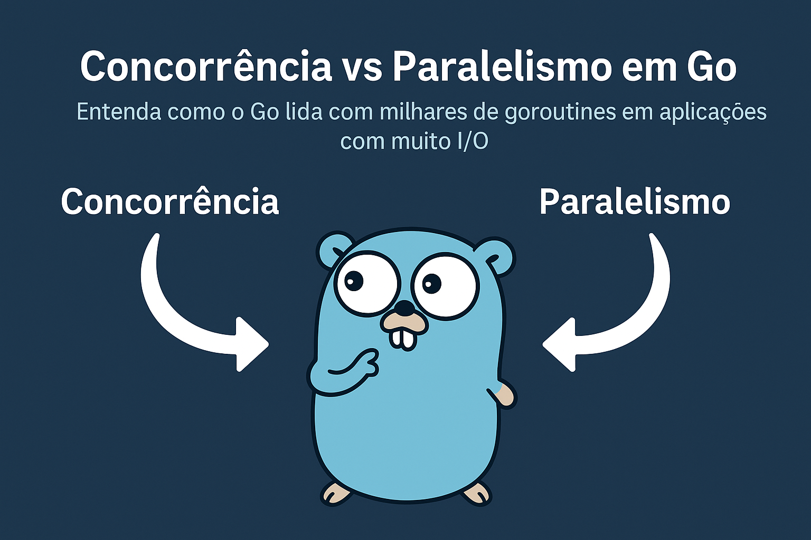
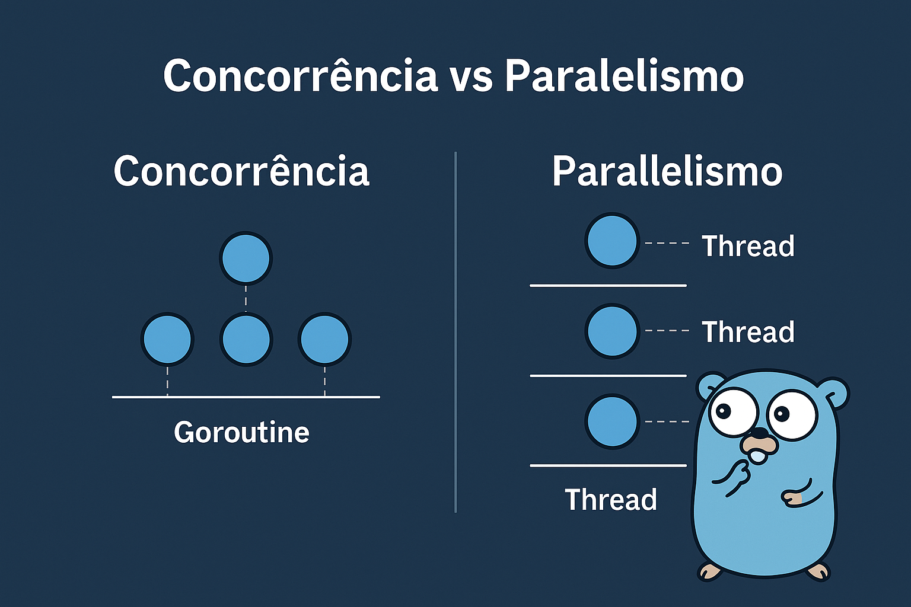
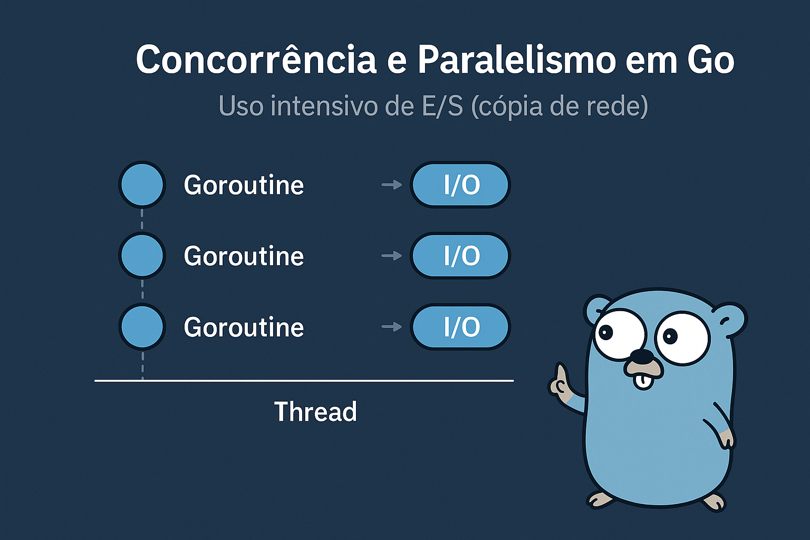

Concorrência vs Paralelismo em Go
Entenda como o Go lida com milhares de goroutines em aplicações com
muito I/O

Concorrência ≠ Paralelismo
- Concorrência: alternância de tarefas
-
Paralelismo: execução simultânea real em
múltiplos núcleos

Uso intensivo de I/O
Goroutines realizam operações bloqueantes de I/O sem impedir que
outras goroutines continuem executando, pois o runtime Go gerencia
threads automaticamente.

O Scheduler do Go (visão geral)
-
Go usa um modelo M:N: múltiplas goroutines para múltiplos threads
(OS)
-
Três principais entidades: G (Goroutine), M (Thread), P
(Processor)
- Cada P tem uma fila de goroutines
Entidades: G,
M,
P
G
Representa uma goroutine
M
Mapeia para uma thread do sistema operacional
P
Contexto de execução, responsável por
escalonar Gs
O scheduler distribui Gs pelas
filas de Ps
Como o Go gerencia as goroutines
- Quando um G está pronto, ele entra na fila do P
- O M pega um G da fila e o executa
-
Se o G realiza I/O bloqueante, o M é liberado e outro G pode ser
executado
Work Stealing
- Se um P estiver ocioso, ele "rouba" goroutines de outros Ps
- Evita gargalos e mantém balanceamento entre threads
- Importante para workloads altamente concorrentes
Escalonamento cooperativo
- Goroutines não são interrompidas à força
-
O runtime do Go insere pontos de yield para garantir troca de Gs
-
Esses pontos aparecem em chamadas a funções como I/O, select, etc.
Exemplo prático
for _, file := range files {
go func(f string) {
copyOverNetwork(f)
}(file)
}
Simples, eficiente, e escalável — o scheduler se encarrega de
otimizar
Benchmark: Go vs Python
Comparação de performance com operações I/O concorrentes
Go
39,652 RPS
2.51ms latência
1 timeout
11.9M requests
vs
Python
8,083 RPS
273ms latência
1,186 timeouts
2.4M requests
Resultado: Go apresentou 4.9x mais requests/segundo com 108x menos latência
Configuração do Teste
Parâmetros Utilizados
- Ferramenta: wrk (HTTP benchmarking)
- Duração: 5 minutos por teste
- Conexões: 100 conexões concorrentes
- Simulação I/O: 1ms delay por request
Análise de Performance
Requests per Second:
Go ███████████████████████████████ 39,652
Python █████ 8,083
Latência (ms):
Go █ 2.51ms
Python ███████████████████████████████ 273ms
Confiabilidade:
Go ▌ 1 timeout
Python ███████████████████████████████ 1,186 timeouts
Análise: Go demonstra superioridade em aplicações concorrentes
Fatores de Performance do Go
- Goroutines: Threads leves (~2KB cada)
- Scheduler M:N: Múltiplas goroutines por thread
- Work Stealing: Balanceamento automático
- Ausência de GIL: Paralelismo real em multi-core
- Runtime eficiente: Binário otimizado (~5MB)
Conclusão
Principais Conceitos
- Scheduler do Go: leve e eficiente para alta concorrência
- Modelo M:N com Work Stealing garante balanceamento automático
- Goroutines são significativamente mais eficientes que threads tradicionais
- Escalonamento cooperativo com runtime inteligente
Evidências Empíricas
- 4.9x superior em requests/segundo comparado ao Python
- 108x menor latência em operações I/O
- 99.9% maior confiabilidade (menos timeouts)
- Eficiência de recursos: binário 20x menor
Aplicações Recomendadas
- APIs de alta performance (>10k RPS)
- Microserviços com requisitos de baixa latência
- Aplicações I/O intensive
- Sistemas distribuídos e arquiteturas concorrentes
- Container workloads com restrições de recursos
Considerações Finais
"Concorrência não é apenas sobre fazer mais tarefas simultaneamente,
mas sobre arquitetar sistemas mais eficientes"
Go demonstra que simplicidade e performance são objetivos compatíveis
Contato
Rafael Sales
Software Engineer